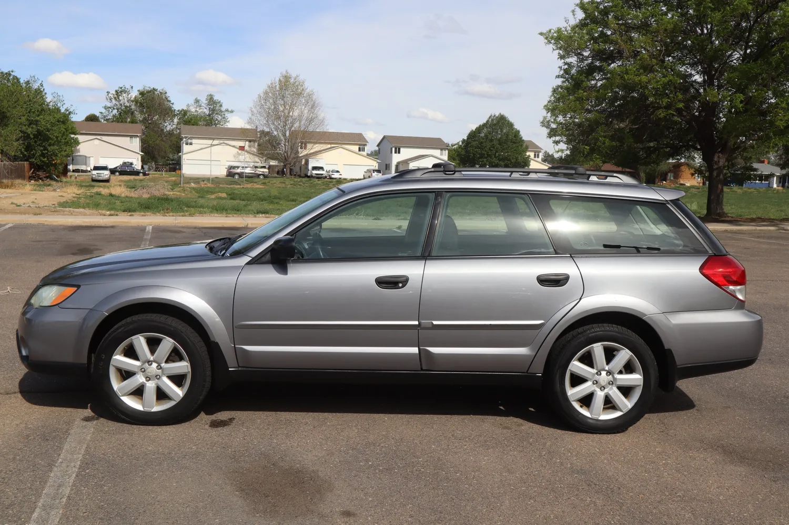

Lab 6 - Arrays and Objects
Challenge
We needed to place in a photo and inport our js file with code into the bottom of this page, down in the "script output" section.
Problems
I had a problem with the '/t' part in the script out put section. It kept having /t show up in all my lines in from of the make, model, color, section. But I fixed it by realizing I had put the wrong slash I had this / instead of the \ which really sucked I took about half an hour trying to figure that out. But I got it. After a while...
Reflection
I felt more confident in this assignment actually even though I had lots of problems, with some help I fixed them and learned from it. I was able to finish it pretty quickly too.
Results
The assignment was pretty easy for the most part and I feel like I learned alot from my problems actually so Im happy about that.
Script Output
Technically yes this is my car but its not actually my picture of my OWN car, this is basically what it looks like with some gold wheels and a cargo camping box on top. THEN, thats my car.